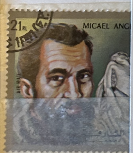
| SOURCE | TITLE| IMAGE MATCH | click to source page |
| eBay | Sharjah Art Famous Renaissance Painter Sculptor Michelangelo Pietta stamp 1969 | eBay | 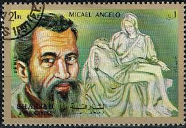 |
| iStock | Postage Stamp Shiarjah Dependencies 1972 Shows Michelangelo Stock Photo - Download Image Now - iStock | 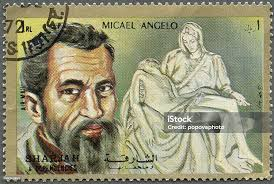 |
| Alamy | Pieta michelangelo hi-res stock photography and images - Page 3 - Alamy | 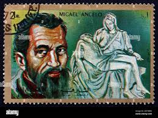 |
| eBay | afars & issas (djibouti) sc# c93 michael angelo stamp conditions: mint never hinged - mnh | 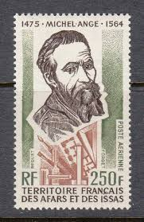 |
| HipStamp | Browse Listings in Europe / HipStamp | 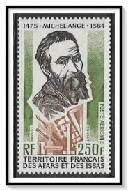 |
| eBay | 1975 Afars&Issas SC# C93 - Michel Angelo Buonarorroti Italien Painter - M-NH | eBay | 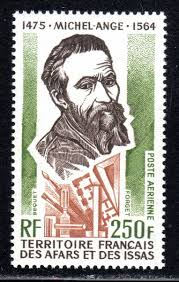 |
| eBay | FRANCE 1957 timbre 1133, MICHEL-ANGE, CELEBRITE', oblitéré, VF STAMP LOT C | eBay | 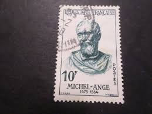 |
| Medium | 10 Ways Michelangelo Sculpted Himself into an Ageless, Creative Masterpiece | by M.M. O'Keefe | Koinonia | Medium | 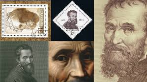 |
| eBay | Stamp France Obliterated No. 1133 Celebrity Michelangelo | eBay | 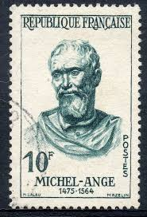 |
| eBay | 1981 George Bernard Shaw, Irish playwright,poet,critic,Monaco,Mi.1492,MNH | eBay | 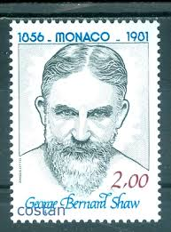 |
| HipStamp | Uruguay Stamp: 1969-SC#772 Sculptor-Jose L-Belloni (1882) MNH Stamp Rare- | Central & South America - Uruguay, General Issue Stamp / HipStamp | 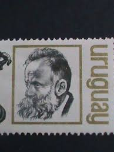 |
| Todocolección | 761608 hinged afars e issas 1976 21 juegos olim - Buy Stamps from other African countries on todocoleccion | 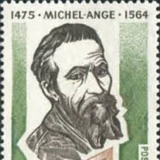 |
| pastperfectonline.com | Stamp, Postage - Sidney Lanier Commemorative U.S. Postage Stamp, 8 cents | Coastal Georgia Historical Society | 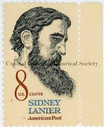 |
| Alamy | Postage stamp from Bulgaria depicting a self-portrait of Michelangelo Buonarotti, Italian artist, sculpturer and architect Stock Photo - Alamy | 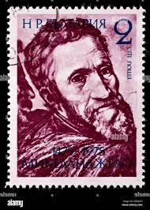 |
| myk.design | Sidney Lanier U.S. Postage Stamps | Face Value 8 Cents | 1972 | Scott – MykDesignShop | 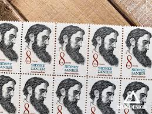 |
| Alamy | Michelangelo on old italian postage stamp Stock Photo - Alamy | 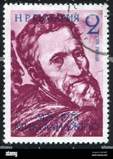 |
| Argonne National Laboratory (.gov) | Chapter 5: Treatment Machines for External Beam Radiotherapy | 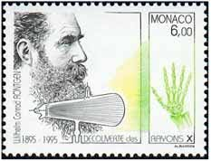 |
| Dreamstime.com | 216 Michelangelo Stamp Stock Photos - Free & Royalty-Free Stock Photos from Dreamstime | 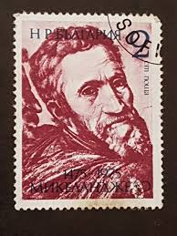 |
| EstateSales.org | Sidney Lanier American Poet Plate Block | EstateSales.org | 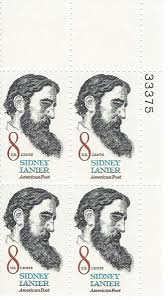 |
| Shutterstock | Spain Circa 1963 Stamp Printed Spain Stock Photo 107516708 | Shutterstock | 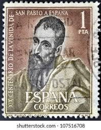 |
| WordPress.com | Michelangelo: Painter, Sculptor, Architect – A Stamp A Day | 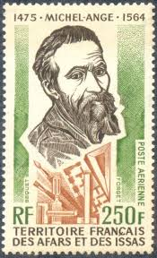 |
| stpaul-culturalroute.eu | Journey to Spain | Cultural Route: St Paul the Apostle of the nations | 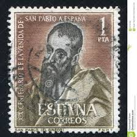 |
| iStock | Italy Galileo Galilei Postage Stamp Stock Photo - Download Image Now - Galileo Galilei, Postage Stamp, Adult - iStock | 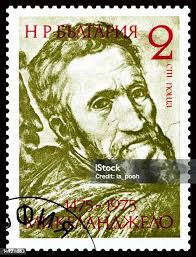 |
| postbeeld.com | Stamp 1975, Afars and Issas Michelangelo 1v, 1975 - Collecting Stamps - PostBeeld - Online Stamp Shop - Collecting | 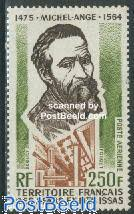 |
| Shutterstock | 6 Cape Dezhnyov Royalty-Free Images, Stock Photos & Pictures | Shutterstock | 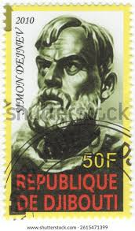 |
| Alamy | Italian stamps hi-res stock photography and images - Alamy | 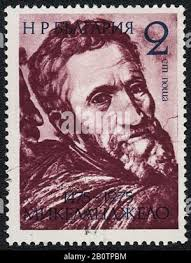 |
| eBay | Romania 1975, Mi#3256, Sc#2541, art, Michelangelo Buonarroti, 500th anniv, MNH! | eBay | 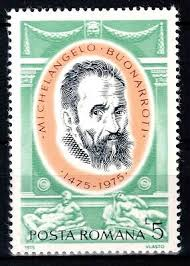 |
| GetArchive | The Soviet Union 1964 CPA 3027 stamp (World Cultural Figures. Michelangelo (1475-1564), Italian sculptor, painter, architect and poet) - PICRYL - Public Domain Media Search Engine Public Domain Image | 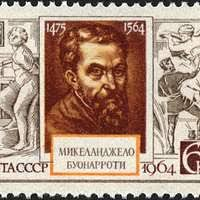 |
| eBay | FRENCH ANTARCTICA 224 - Rene Garcia "Polar Explorer" (pb90436) | eBay | 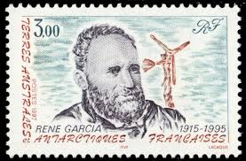 |
| eBay | US 1446 Sidney Lanier 8c zip block LR MNH 1972 | eBay | 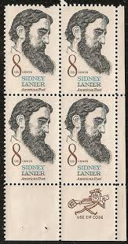 |
| iStock | Postage Stamp Germany 1975 Shows Michelangelo Painter Stock Photo - Download Image Now - iStock | 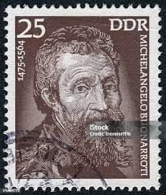 |
| eBay | US. 1446. Sidney Lanier (1842-81) Poet, Musician & Critic. Zip Block of 4. 1972 | eBay | 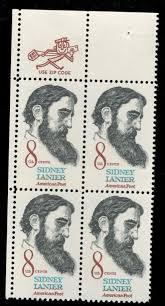 |
| stamps.kg | The Anniversaries of Great Personalities | 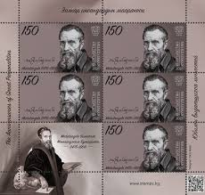 |
| Shutterstock | 1+ Thousand Romania Literature Royalty-Free Images, Stock Photos & Pictures | Shutterstock | 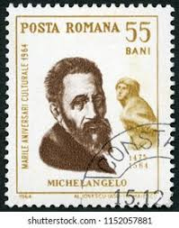 |
| eBay | Spain 1963 St. Paul Paintings/El Greco Saints ReligionArts MNH | eBay | 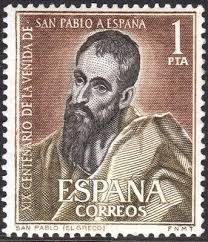 |
| Ethnicity of Celebs | Michelangelo - Ethnicity of Celebs | EthniCelebs.com | 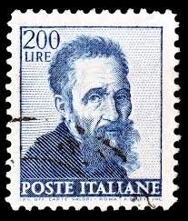 |
| Dreamstime.com | Portrait of Michelangelo by Daniele Da Volterra Editorial Image - Image of palette, ricciarelli: 248899380 | 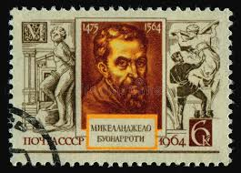 |
| Alamy | Wilhelm Rontgen, detector of X-rays, on postage stamp Stock Photo - Alamy | 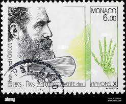 |
| eBay | US. 1446. Sidney Lanier (1842-81) Poet, Musician & Critic. Plate Block of 4 1972 | eBay | 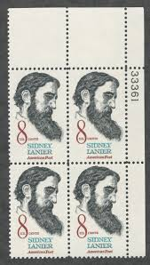 |
| Acharya P.C. Ray's Legacy: India's First Indigenous Pharma Enterprise | V Hari Narayanan posted on the topic | LinkedIn | 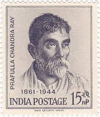 | |
| healthinstamps.com | About flowing beards, wisdom and medical men - Health and Medicine in Postal Stamps | 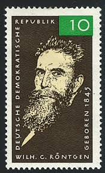 |
| Alamy | SPAIN - CIRCA 1963: A stamp printed in Spain shows San Pablo painted by Greco, nineteenth centenary of the coming of St. Paul to Spain, circa 1963 Stock Photo - Alamy | 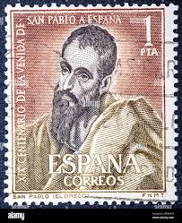 |
| eBay | US. 1446. Sidney Lanier (1842-81) Poet, Musician & Critic. Plate Block of 4 1972 | eBay | 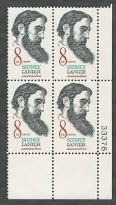 |
| iStock | Postage Stamp From German Democratic Republic Dedicated To Röntgen Stock Photo - Download Image Now - iStock | 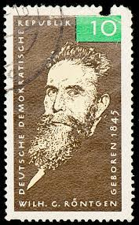 |
| Wikimedia.org | File:The Soviet Union 1991 CPA 6320A luxury block (Nobel Prize in Physiology or Medicine laureate Élie Metchnikoff. Allegory 'Medicine').jpg - Wikimedia Commons | 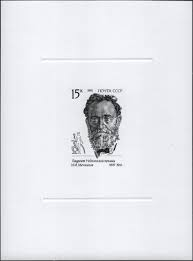 |
| eBay | Greece Stamps: 1951 St. Paul by El Greco, SC 537 Used | eBay | 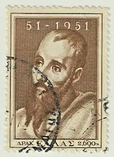 |
| Dreamstime.com | GERMANY, DDR - CIRCA 1975 : a Postage Stamp from Germany, GDR Showing a Portrait of the Painter, Sculptor, Builder and Poet. Miche Editorial Image - Image of buonarroti, berlin: 202686495 | 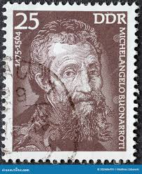 |
| Shutterstock | 조상사: Over 188,686 Royalty-Free Licensable Stock Photos | Shutterstock | 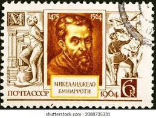 |
| Alamy | Italian painter renaissance hi-res stock photography and images - Alamy | 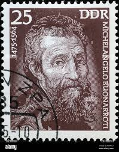 |
| iStock | Michelangelo Stamp Stock Photo - Download Image Now - Adult, Artist, Black Background - iStock | |
| eBay | SPAIN ESPAÑA 1963 COMPLETE SET NUEVO MINT MNH Sc# 1154 ST. PAUL BY EL GRECO | eBay | |
| Todocolección | monaco 1981, yvert nº 1291**, george bernard sh - Buy Antique stamps of Monaco on todocoleccion | |
| Wikimedia.org | Category:Paintings by Michelangelo Buonarroti - Wikimedia Commons | |
| eBay | 1446, Mint NH 8¢ Drastically Misperforated Error Block W/Normal - Stuart Katz | eBay | |
| eBay | 1975 RICCIONE ITALIO SURCHARGE VF MNH ROMANIA RUMÄNIEN | eBay | |
| eBay | monaco 2021 Fiodor Dostoïevski 18211881 russian writer art social novel 1v mnh | eBay | |
| eBay | MALI SCOTT# C115 MNH ALFRED NOBEL (1833-1896) INVENTOR OF DYNAMITE, NOBEL PRIZE | eBay | |
| Etsy | 20x Sidney Lanier POET 1972 8c Unused Vintage Postage Stamp Free Shipping! Your #1 Source With the Best Prices on Vintage Stamps - Etsy | |
| eBay | ROMANIA MNH 1975 SG4163 INT PHILATELIC FAIR - RICCIONE ITALY | eBay |
.jpg){kind=link}